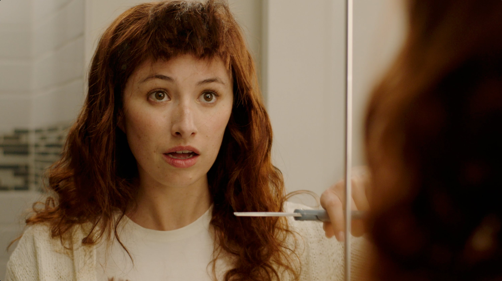

CTV Spot
A 30-second Connected TV commercial for First American, built around a DIY mishap and the lesson it leaves behind.

Brand
Overview
First American needed a Connected TV spot that could stand out in a crowded streaming ad break while still feeling true to the brand. The goal was to create something memorable and human rather than another straightforward insurance message.
The concept, “Lessons Learned,” uses a relatable DIY mishap to introduce the value of getting it right the first time in a lighter, more human way.
My Role
I developed the concept and storyboarded the spot, then helped shape its execution through casting and filming. I worked alongside the production company to direct the shoot and oversee the edit through the final cut.
TV Spot
- Creative Direction
- Kyle Peck, Michelle Simkin
- Production
- Sweet Bread Co.
Impressions
People Reached
Video Completion Rate
Based on the first two months since launch.